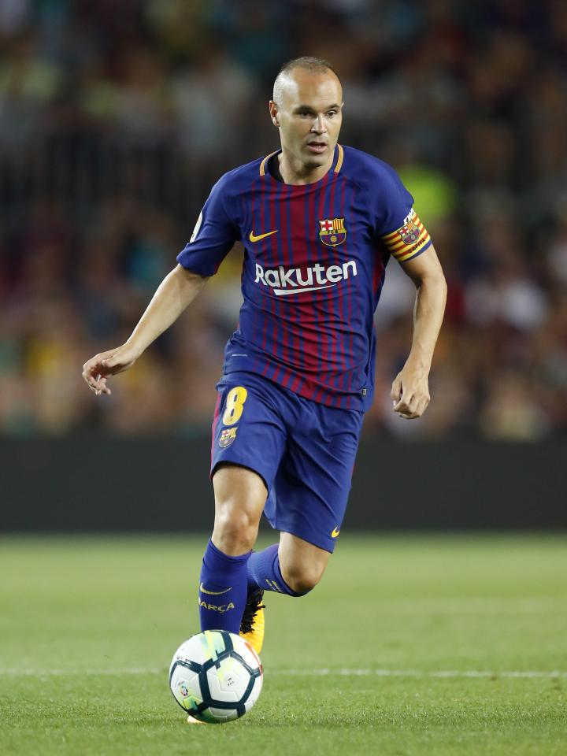
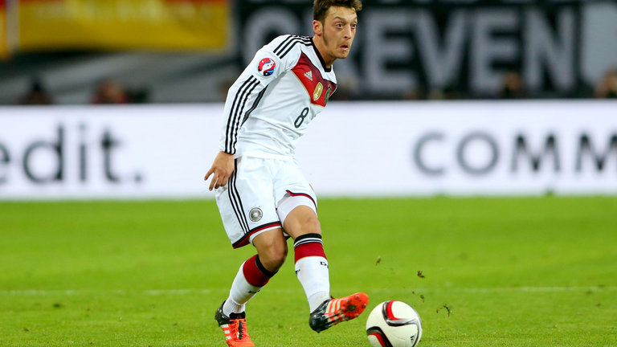
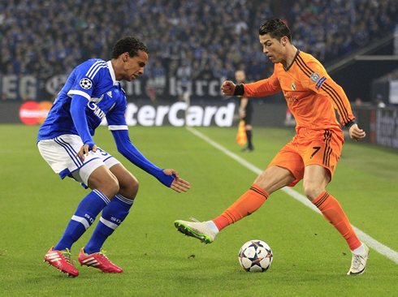
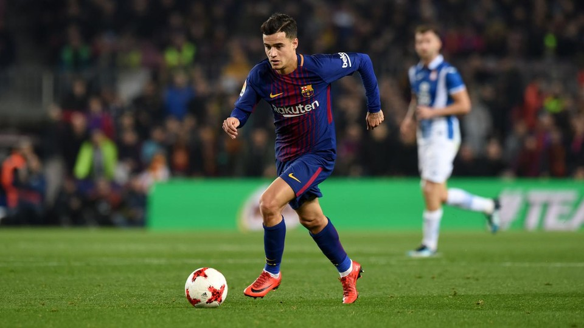
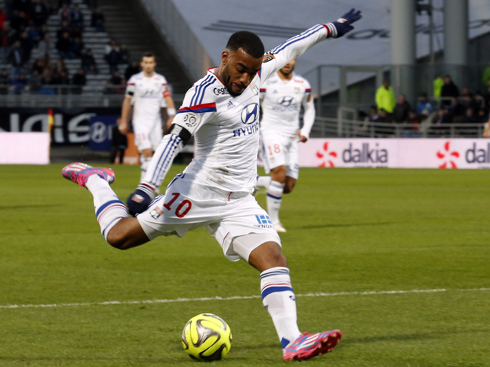
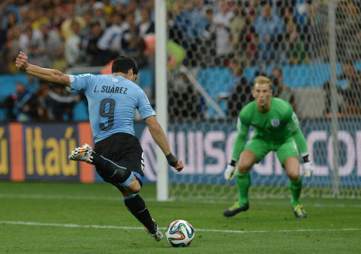

Soccer
Passing
Passing is one of the most basic concepts in soccer. Strong fundamental skills, vision, and teamwork are essential to passing. There are various types of passes. Short passes, such as one-twos, through balls, and overlaps, are intended to move the ball past defenders into space. Long passes, such as clears, switches, and crosses, are intended for picking out an open teammate from a farther distance or to set up a counterattack or scoring opportunity.

Short Passing
Short passing is fundamental to playing soccer. Here are some tips on short passing:
- Point your other foot to where you want the ball to go.
- Use the inside of your foot to pass the ball. This part of your foot has the most area and is the most accurate.
- Hit the centre of the ball - this makes your pass stronger and keeps the ball on the ground.
- Sweep through the ball, to ensure a firm pass.
Here are some things to keep in mind about short passes:
- Signal to your target that you intend to pass the ball to them (e.g. make eye contact). Communication is key.
- The pass should be played on the ground, to make it easier for your teammate to control it.
- The pass should be played firm so that it is hard to intercept, while still being easy for your teammate to control.
- Follow your pass or run into space - this creates plays and moves the ball forward for your team.
Midfield maestro Andres Iniesta runs Barcelona’s legendary midfield using the tiki-taka system, which is based off of thousands of short passes and quick movement.
Different Types of Short Passes
- One-Two
- Player 1 passes the ball to Player 2, then Player 1 runs around an opponent into space. Then, Player 2 passes the ball back to Player 1, who is now open.
- Overlap
- This play is like the One-Two. Player 1 passes the ball to Player 2, then Player 1 runs around Player 2 into space. Then, Player 2 passes the ball back to Player 1, who is now open.
- Through Ball
- Player 1 sees Player 2 running into space between or behind defenders. Player 1 passes the ball into the open space for Player 2 to latch onto.
Long Passing
Long passing is somewhat like short passing. Here are some tips how to play a good long pass:
- Point your other foot to where you want the ball to go.
- Use the inside of your foot to pass the ball. Using the tip of your inside or your instep (where your laces are) for more power or height are adequate as well.
- Hit the bottom part of the ball - this gives your pass distance and height to go over opponents.
- Sweep through the ball, to ensure a firm pass.
Here are some things to keep in mind about long passes:
- Signal to your target that you intend to pass the ball to them (e.g. make eye contact). Communication is key.
- The pass should be played in the air, to go past opponents.
- The pass should be played strong to get distance, while still being easy for your teammate to control.
- Follow your pass or run into space - this creates plays and moves the ball forward for your team.
Different Types of Long Passes
- Cross
- Player 1 is in the attacking end of the field and sees Player 2 open in the other team penalty box. Player 1 passes the ball in the air to Player 2 so Player 2 can volley or head the ball to score.
- Switch
- Player 1 sees Player 2 open on the other side of the pitch. Player 1 passes the ball in the air to Player 2 so the team can try to move forward somewhere else.
- Clear
- Player 1 is in the defensive end of the field and is pressured by opponents. Player 1 passes the ball far away to relieve the pressure on the team, and possibly start a counterattack.

German playmaker Mesut Özil has a gift for assisting his teammates. He can play very long passes with pinpoint accuracy.
Dribbling
Dribbling is an essential skill across all levels of soccer. Teams rely on midfielders to weave their way in and out of opponents and create plays because of it. Players who can dribble with speed while retaining control of the ball are beneficial to a team.
Here are the basics of dribbling:
- Use the instep (laces) part of your foot to dribble the ball.
- Use the inside and outside of your foot to turn with the ball.
- Take small touches, to keep the ball close to you.
Here are some things to keep in mind about dribbling:
- When opponents are in front of you, take smaller touches to keep the ball close to you. You should take a touch for every step of your other foot.
- When opponents are behind you, take larger touches to move faster with the ball. You should take a touch for every two or three steps of your feet.
- Bend your knees to lower your centre of gravity. This makes you harder to shake off the ball when dribbling.
- Keep your head up - most players dribble with their head down. Raising your head allows you to see nearby opponents as well as open teammates.
Skill Moves
An essential component of engaging defenders is confidence. Here are some basic skill moves you can use to get past defenders:
- Body Feint
- This skill move involves using solely your body to fake going in one direction. It is a simple yet deadly skill to have in your arsenal.
- Stepover
- This skill move involves putting your foot over the ball to fake going in that direction. Variants of this move include the double stepover, reverse stepover, etc.
- Roll
- This skill move involves using the bottom of your foot to move the ball with force, usually to escape the reach of an opponent’s challenge.
- Fake Shot
- This skill move involves faking a shot at the net, forcing a defender to commit.

Cristiano Ronaldo performing a stepover on a defender. The Portuguese winger excels in dribbling, physicality, and finishing.
Examples of Good Dribblers
These are some examples of world-class players with a talent for dribbling. Watch their games or highlights to learn from them.
- Lionel Messi (FC Barcelona, Argentina)
- Phillippe Coutinho (FC Barcelona, Brazil)
- Neymar (Paris St-Germain, Brazil)

Phillippe Coutinho, like many Brazilian players before him, is a creative and nimble dribbler.
Finishing
The only way to win in soccer is to score more goals than your opponent, so finishing your chances is a vital skill. Forwards who can score an equaliser in the dying minutes of an important game are invaluable to a team. Here are some tips on how to strike the ball:
- Push the ball to the side of you, and approach it at around a 45° angle.
- Put your other foot beside the ball.
- Bend your foot back to put power into your shot.
- Swing through the ball, lifting your kicking foot across your body.
- Your momentum should lead you to jump, putting your other foot outwards, and you should land on your kicking foot.
Here are some things to keep in mind about shooting:
- Most players stop after hitting the ball - strike through the ball to maximize the power going into the shot.
- Look up when you shoot - this improves your accuracy and awareness of the situation.
- Pick one of the four corners when you shoot. These spots are the hardest to reach for goalkeepers.
- Run after your shot - getting a rebound can lead to a goal for your team.

French forward Alexandre Lacazette attempts a shot on goal. Notice how he bends his foot back to make his shot powerful.
Different Types of Shots
Depending on the situation, some shots may work better than others. The following are various shots suitable for different situations:
- Regular Shot
- This type of shot balances accuracy with power. It works best when the goalkeeper is on the goal line, where it is harder for him to reach the corners of the net. The more power put into this shot, the harder it is for the goalkeeper to catch and the more chance of a set piece or rebound for your team.
- Placed Shot
- This type of shot puts accuracy over power. Usually struck with the side of the foot, it looks to accurately place the ball to one of the bottom corners outside the reach of the goalkeeper.
- Chip Shot
- Requiring strong technique, this type of shot works well when the goalkeeper is well off the goal line. Hit the bottom of the ball with controlled power to lift the ball over the goalkeeper and falling into the net.
You can add curve to a shot by creating backspin on the ball when you shoot:
- Approach the ball from a 45° angle. This number can vary as some players prefer greater angles and others prefer smaller angles.
- Using the inside or tip of your foot are the easiest to create spin on the ball.
- Hit the right side of the ball to make it spin towards the left, and vice versa. If you hit the bottom left/right section of the ball, you can get height and curve on your shot which is ideal for set pieces as well as crosses.

Uruguay’s Luis Suarez attempts a shot on goal.
Return to the top of the page.
Special thanks to the sources used when creating this page.